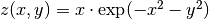

In many areas, such as fluid dynamics and elasticity, it is desirable to plot vector fields of various kinds. GMT provides a way to illustrate 2-component vector fields using the grdvector utility. The two components of the field (Cartesian or polar components) are stored in separate grid files. In this example we use grdmath to generate a surface  and to calculate by returning the x- and y-derivatives separately. We superpose the gradient vector field and the surface z and also plot the components of the gradient in separate windows. A pstext call to place a header finishes the plot
#!/bin/bash
# GMT EXAMPLE 13
#
# Purpose: Illustrate vectors and contouring
# GMT progs: grdmath, grdcontour, grdvector, pstext
# Unix progs: echo, rm
#
ps=example_13.ps
gmt grdmath -R-2/2/-2/2 -I0.1 X Y R2 NEG EXP X MUL = z.nc
gmt grdmath z.nc DDX = dzdx.nc
gmt grdmath z.nc DDY = dzdy.nc
gmt grdcontour dzdx.nc -JX3i -B1 -BWSne -C0.1 -A0.5 -K -P -Gd2i -S4 -T0.1i/0.03i > $ps
gmt grdcontour dzdy.nc -J -B -C0.05 -A0.2 -O -K -Gd2i -S4 -T0.1i/0.03i -Xa3.45i >> $ps
gmt grdcontour z.nc -J -B -C0.05 -A0.1 -O -K -Gd2i -S4 -T0.1i/0.03i -Y3.45i >> $ps
gmt grdcontour z.nc -J -B -C0.05 -O -K -Gd2i -S4 -X3.45i >> $ps
gmt grdvector dzdx.nc dzdy.nc -I0.2 -J -O -K -Q0.1i+e+n0.25i -Gblack -W1p -S5i \
--MAP_VECTOR_SHAPE=0.5 >> $ps
echo "3.2 3.6 z(x,y) = x@~\327@~exp(-x@+2@+-y@+2@+)" \
| gmt pstext -R0/6/0/4.5 -Jx1i -F+f40p,Times-Italic+jCB -O -X-3.45i >> $ps
rm -f z.nc dzdx.nc dzdy.nc
Display of vector fields in GMT.
{kind=link}